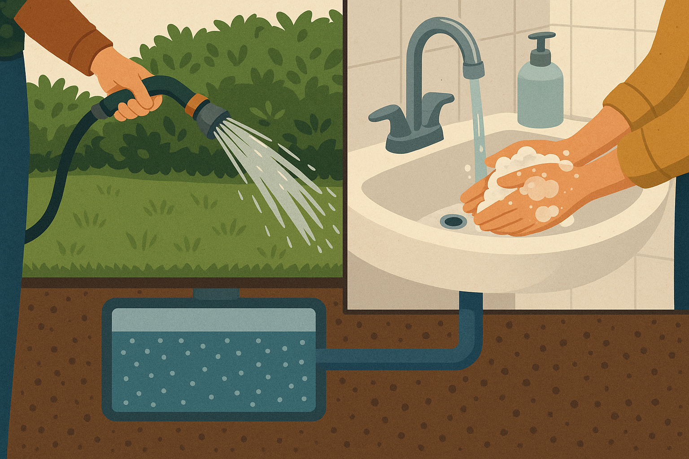

❮
❯
O que buscamos resolver?
O projeto busca resolver o grave problema das enchentes recorrentes na cidade de São Paulo e em várias regiões do Brasil...
Nossas tecnologias
As tecnologias utilizadas incluem pavimentos permeáveis inteligentes, sensores de monitoramento e sistemas automatizados...
Nossos objetivos
- Reduzir significativamente a quantidade de enchentes urbanas.
- Minimizar os danos causados pelas chuvas à população e ao comércio.
- Promover o uso sustentável da água da chuva.
- Criar um sistema urbano mais resiliente às mudanças climáticas.
Públicos impactados
A população urbana, comerciantes, prefeituras e órgãos públicos de infraestrutura e meio ambiente.
Nossos benefícios
- Menor risco de enchentes.
- Redução de doenças e prejuízos materiais.
- Aproveitamento sustentável da água da chuva.
- Melhoria na infraestrutura urbana.

Benefícios para a população
Mais segurança e tranquilidade durante chuvas intensas, evitando alagamentos e permitindo reutilização da água da chuva.
